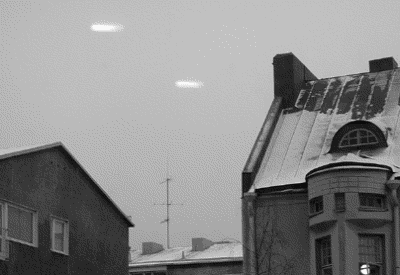

Sami Laitala Suomen Ufotutkijat ry:stä kertoi Skepsiksen yleisötilaisuudessa marraskuussa, että tuntemalla kuvien ottamiseen liittyvät laitteet, tekniikat ja prosessit ufotutkijat voivat löytää kuvista epäjatkuvuuskohtia ja epäjohdonmukaisuuksia, jotka paljastavat kuvat manipuloiduksi.
Laitala itse on harrastanut sekä valokuvausta että mustavalkoisten kuvien kehittämistä kaksikymmentäviisi vuotta, ja on jo varhain kokeillut manipuloida kuvan syntyyn vaikuttavia prosesseja kaikissa mahdollisissa vaiheissa nähdäkseen, miten kuviin voidaan vaikuttaa.
Kuvaa voidaan Laitalan mukaan manipuloida joko tahallaan tai vahingossa muun muassa valonlähteillä, -voimakkuudella, -suunnalla, -värillä ja -heijastuksilla. Myös heijastumia, heijastavan pinnan tekstuuria ja kuva-alan ulkopuolella olevia valonlähteitä sekä valonläpäisyä voidaan käyttää vaikuttamaan lopputulokseen.
Kun kuvaa ufokuvaa, merkittävää voi olla valoa läpäisevän aineen tiheys. Valo taittuu ja heijastuu tiheydeltään erilaisten väliaineiden – kuten ilma, vesi ja lasi – rajapinnassa. Tiheyteen vaikuttaa muun muassa ilman lämpötila, esimerkkinä muun muassa kangastukset.
Kuvaan vaikuttaa myös valoherkän materiaalin reagoiminen valoon, siis filmin herkkyys ja valon eri aallonpituudet. Filmiä voidaan myös altistaa muulle säteilylle ja sitä voidaan käsitellä kemiallisesti ja mekaanisesti. Valotusajalla, sulkimen tyypillä ja muodolla on Laitalan mukaan myös merkityksensä.
Keinoja on monia: kaksoisvalotus (ks. Laitalan luentokalvosta otettu kuva tämän sivun alalaidassa), taustaprojisointi, filmin kuumentaminen, vedostusmateriaalin käsitteleminen, yli- tai alivalotus ja negatiivien tai diojen asettaminen päällekkäin.
Kuvaa kehitettäessä voi valotuksen aikana käyttää hyödykseen maskeja. Lisäksi vedostusmateriaalia voi taivuttaa, liikuttaa ja pyörittää valotuksen aikana. Vedostusmateriaalia voi myös käsitellä kemiallisesti tai mekaanisesti; vanhentuneet kemikaalit ja likainen huuhteluvesi tuottavat usein vahingossakin ufokuvia. Samoin erilaiset roskat: karvat, hiukset, kuplat, hiekka ja pöly.

Perustrikit ufokuvaväärennöksen tekemisessä ovat Laitalan mukaan kaksoisvalotus, aikavalotus, kuvaaminen lasin läpi (piirrokset lasissa, heijastukset) ja pienoismallin käyttäminen. Yleinen, yleensä tahaton virhe on, että linssin edessä on pieniä hiukkasia, vesipisaroita tai pölyä, jotka näkyvät erityisesti salamaa käytettäessä. Salaman heijastuksetkin tuottavat muutenkin usein yllättäviä lopputuloksia. Huijauskuvat paljastetaan etsimällä kuvista muun muassa valojen ja varjojen epäloogisuuksia ja epäjatkuvuuskohtia – etenkin kuvan saumoissa ja rakeisuudessa. Kuvan ottopaikalla on käytävä, jos mahdollista, ja katsottava sopiiko valon ja varjojen suunta väitettyyn kuvausaikaan. Lisäksi tarkastetaan, mitä jäi kuvaushetkellä kuvaajan selän taakse; siellä saattaa olla ikkunaan heijastuva pyöreä ufomainen lamppu.
Onko Laitalalle tullut vastaan ufokuvaa, johon hän ei ole keksinyt selitystä?
– Kyllä selityksen aina keksii, muttei aina kovin hyvää. Iso osa kuvista on yksinkertaisesti niin huonoja, ettei niistä voi sanoa mitään varmaa suuntaan taikka toiseen. Tapauksen kulusta ja sen yksityiskohdista ei myöskään aina saa kaikkea selville. Lisätiedot voisivat ratkaista asian tai eliminoida osan selityksistä.
– Esimerkiksi Kallion kirkon ”ufolle” en osaa esittää kuin arvauksia ja mahdollisia selityksiä. Ongelmana tapauksessa on se, että ilmiö huomattiin kuvanauhalla vasta myöhemmin; kukaan ei koskaan nähnyt sitä paikan päällä. Ilman havaintoja tapaus on arvoton.
– Nauhalla näkyy kahdesti, kuinka kirkas valkoinen valoilmiö liikkuu viivasuoraan alhaalta ylös kuvaruudun poikki. Se voisi muuten olla ilmapallo tai hotelli Hesperiasta irti laskettu pilottipallo, mutta sellainen ei kulkisi ruudun poikki niin nopeasti; se liikkuisi ainakin hiukan vinosti tuulen takia ja tuskin näyttäisi niin suurelta niin etäällä. Kyseessä voi olla vika tai häiriö kamerassa, mutta sellaiseksikin se olisi kovin outo.
Kirjoittaja Risto K. Järvinen on Skeptikko-lehden päätoimittaja